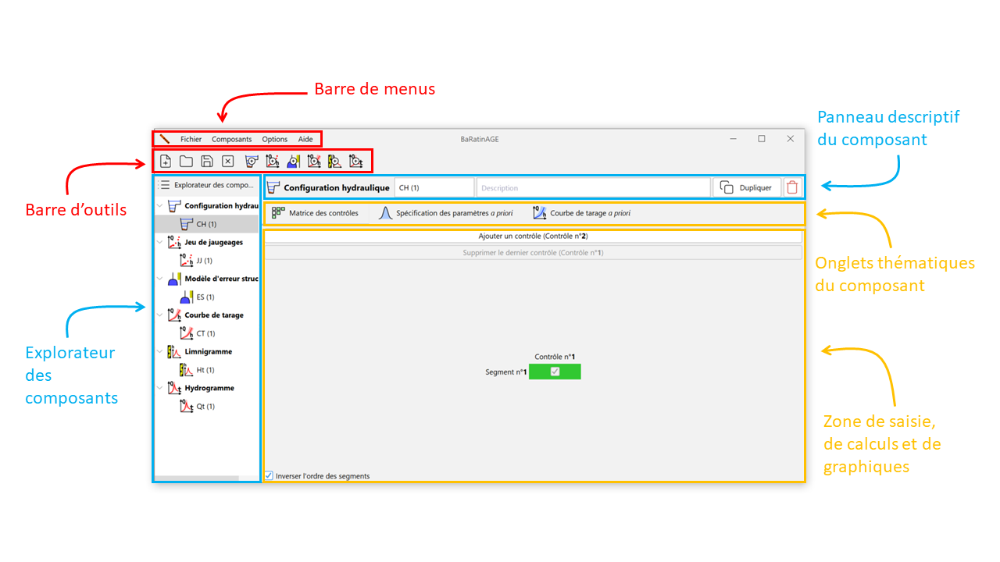
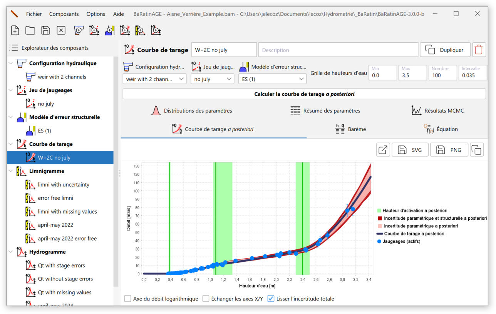

Organisation générale
La fenêtre représentée ci-dessous apparaît au démarrage de BaRatinAGE v3 :

Outre les classiques barres de menus et d’outils (dont le fonctionnement sera détaillé ultérieurement), cette fenêtre comporte plusieurs zones principales :
- A gauche, l’explorateur des composants qui permettra de naviguer parmi les différents composants créés dans BaRatinAGE : configurations hydrauliques, jeux de jaugeages, modèles d’erreur structurelle, courbe de tarage, limnigramme et hydrogramme.
- A droite, de haut en bas :
- le panneau descriptif du composant sélectionné dans l’explorateur ;
- les onglets thématiques du composant ;
- la zone de saisie, de calculs et de graphiques correspondant à l’onglet thématique sélectionné.
Dans BaRatinAGE au démarrage, un composant de chaque type pré-existe, avec des champs vierges ou renseignés par défaut.
Pour illustrer plus efficacement le fonctionnement de BaRatinAGE, nous allons ouvrir une étude pré-enregistrée. Pour ce faire, cliquez sur l’outil Ouvrir un projet… ou dans le menu Fichier…Ouvrir un projet… (Ctrl+O), et ouvrez le fichier nommé Aisne_Verrieres_Example.bam dans le répertoire example (ce répertoire est situé dans le dossier où vous avez installé BaRatinAGE).
Navigation dans l’interface graphique
La fenêtre principale devrait à présent comporter plusieurs composants comme illustré dans la figure ci-dessous. La logique de l’interface graphique est d’utiliser l’explorateur des composants pour naviguer dans BaRatinAGE. Un clic gauche permet de sélectionner un composant, ce qui met automatiquement à jour les panneaux situés à droite. Un clic droit donne accès à un certain nombre d’outils (détaillés ultérieurement).
Notez également que les info-bulles sont omniprésentes dans l’application. N’hésitez pas à les consulter car elles fournissent souvent des indications plus détaillées que le nom des champs, boutons, etc.

Le panneau descriptif du composant rappelle le type de composant sélectionné (icône et nom), son nom et sa description (texte libre). Il comporte en outre les boutons Dupliquer et Supprimer le composant.
Les onglets thématiques du composant sont spécifiques au composant considéré : ils seront décrits dans les pages suivantes de cette documentation, qui détaillent ces composants un par un.
Il en va de même des zones de saisie, de calculs et de graphiques associées. Signalons les fonctionnalités suivantes de la zone graphique elle-même :
- On peut effectuer un zoom avec la souris en maintenant le clic gauche appuyé et en dessinant un rectangle depuis le coin supérieur gauche vers le coin inférieur droit. Pour revenir aux axes initiaux, on procède de manière similaire mais en dessinant le rectangle depuis le coin inférieur droit vers le coin supérieur gauche ;
- Le clic droit sur le graphique donne accès à un menu permettant les actions suivantes (également disponibles via des boutons situés au-dessus de la figure) :
- Tracer la figure dans une fenêtre extérieure ;
- Exporter l’image au format vectoriel SVG ;
- Exporter l’image au format PNG ;
- copier dans le presse-papier.